Anti-Windup Control Using a PID Controller
Contents
- Model Description
- Performance Without Using Anti-Windup
- Configuring the Block for Anti-Windup Based on Back-Calculation
- Configuring the Block for Anti-Windup Based on Integrator Clamping
- Using Tracking Mode to Handle Complex Anti-Windup Scenarios
- Constructing Anti-Windup Circuitry for Saturated Actuators with Cascaded Dynamics
- Constructing Anti-Windup Circuitry for PID Control with Feedforward
- Summary
- References
Model Description
This demo explores the anti-windup capabilities supported by the PID Controller block in Simulink®. The block features two built-in anti-windup methods, back-calculation and clamping, as well as a tracking mode to handle more complex scenarios.
The plant to be controlled is a saturated first-order process with dead-time.
We start by opening the model.
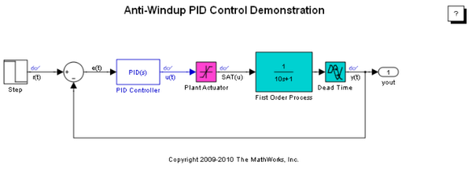Figure 1: Simulink model of PID control of a plant with input saturation.
To open this model, type sldemo_antiwindup in a MATLAB® terminal.
The PID Controller has been tuned with saturation ignored using the PID tuner of Simulink® Control Design™.
The controlled plant is a first-order process with dead-time described by
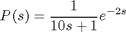
The plant has known input saturation limits of [-10, 10], which are accounted for in the Saturation block labeled Plant Actuator. The PID Controller block in Simulink features two built-in anti-windup methods that allow the PID Controller block to account for the available information about the plant input saturation.
Performance Without Using Anti-Windup
First, we examine the effect of saturation on the closed-loop when the saturation model is not considered by the PID Controller block. Simulating the model in Figure 1 generates the results shown below.

Figure 2: Setpoint vs. measured output with no anti-windup.
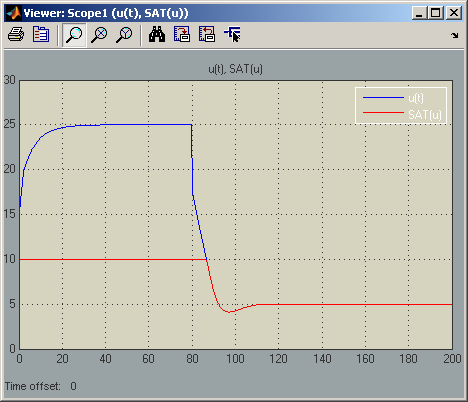Figure 3: Controller output and saturated input with no anti-windup.
Figures 2 and 3 highlight two of the problems that arise when controlling a system with input saturation:
- When the setpoint value is 10, the PID control signal reaches a steady-state at about 24, outside the range of the actuator. The controller is therefore operating in a nonlinear region where increasing the control signal has no effect on the system output, a condition known as winding up. Note that the dc-gain of the plant is unity, and therefore there is no reason for the controller output to have a steady-state value outside the actuator's range.
- When the setpoint value becomes 5, there is a considerable delay before the PID controller output returns to within the actuator range.
Designing the PID controller to account for the effect of saturation will improve its performance by allowing it to operate in the linear region most of the time and recover quickly from nonlinearity. Anti-windup circuitry is one way to achieve this.
Configuring the Block for Anti-Windup Based on Back-Calculation
The back-calculation anti-windup method uses a feedback loop to discharge the PID Controller's internal integrator when the controller hits specified saturation limits and enters nonlinear operation. To enable anti-windup, go to the PID Advanced tab in the block's dialog; select Limit output; and enter the plant's saturation limits. Then, select back-calculation from the Anti-windup method menu and specify the back-calculation gain Kb. The inverse of this gain is the time constant of the anti-windup loop. In this demo, the back-calculation gain is chosen to be 1. For more information on how to choose this value, see Reference [1].
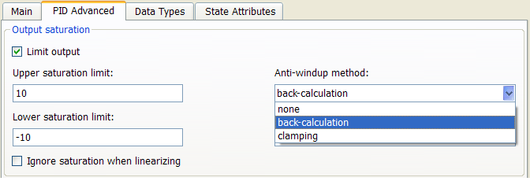
Figure 4: Enabling the back-calculation anti-windup method.
Once back-calculation is enabled, the block has an internal tracking loop that discharges the Integrator output.
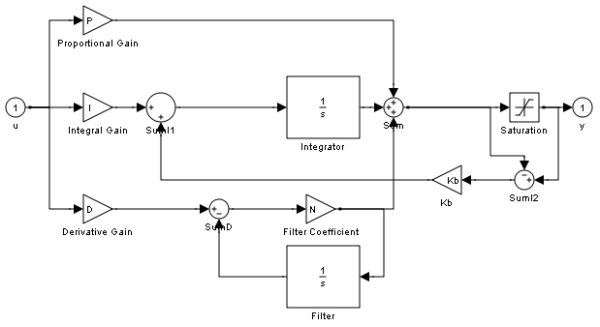Figure 5: Under-mask view of the PID Controller block with back-calculation.
Figures 6 and 7 illustrate the result of simulating the model with anti-windup activated. Note how quickly the PID control signal returns to the linear region and how fast the loop recovers from saturation.
Figure 6: Setpoint vs. measured output with back-calculation.
Figure 7: Controller output and saturated input with back-calculation.
Figure 7 shows that the controller output u(t) and the saturated input SAT(u) coincide with each other because Limit output is enabled.
To better visualize the effect of anti-windup, Figure 8 illustrates the plant measured output y(t) with and without anti-windup.
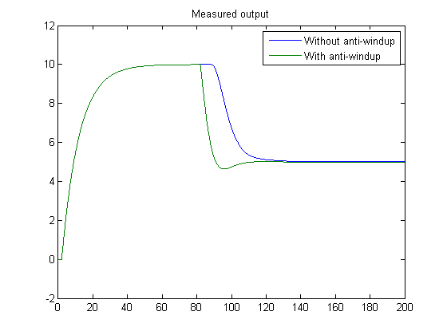Figure 8: Measured output with and without anti-windup.
Configuring the Block for Anti-Windup Based on Integrator Clamping
Another commonly used anti-windup strategy is based on conditional integration. To enable anti-windup, go to the PID Advanced tab in the block's dialog; select Limit output; and enter the plant's saturation limits. Then, select clamping from the Anti-windup method menu.
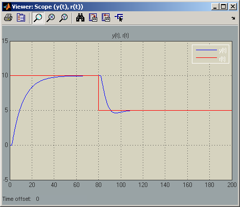Figure 9: Setpoint vs. measured output with clamping.
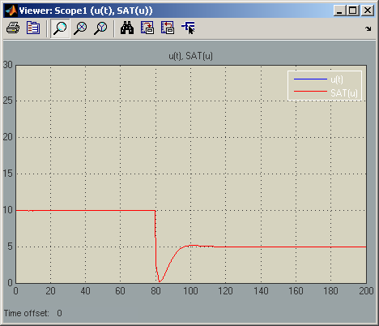Figure 10: Controller output and saturated input with clamping.
Figure 10 shows that the controller output u(t) and the saturated input SAT(u) coincide with each other because Limit output is enabled.
For more information on when to use clamping, see Reference [1].
Using Tracking Mode to Handle Complex Anti-Windup Scenarios
The previously discussed anti-windup strategies relied on built-in methods to process the saturation information provided to the block via its dialog. For those built-in techniques to work as intended, two conditions must be met:
- The plant's saturation limits are known and can be entered into the dialog of the block.
- The PID Controller output signal is the only signal feeding the actuator.
These conditions may be restrictive when handling general anti-windup scenarios. The PID Controller block features a tracking mode that allows the user to set up a back-calculation anti-windup loop externally. In the rest of the demo, the following two examples are considered to illustrate the use of tracking mode for anti-windup purposes:
- Anti-windup for saturated actuators with cascaded dynamics
- Anti-windup for PID control with Feedforward
Constructing Anti-Windup Circuitry for Saturated Actuators with Cascaded Dynamics
In the following model, the actuator has complex dynamics. This is common when an actuator has its own closed-loop dynamics. The PID controller is in an outer loop and sees the actuator dynamics as an inner loop, or simply a cascaded saturated dynamics as shown in Figure 1.
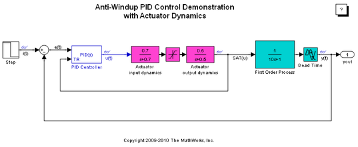Figure 11: Simulink model of PID controller with cascaded actuator dynamics.
To open this model, type sldemo_antiwindupactuator in a MATLAB terminal.
In this case, a successful anti-windup strategy requires feeding back the actuator output to the tracking port of the PID Controller block as shown in Figure 11. To configure the tracking mode of the PID Controller block, go to the PID Advanced tab in the block's dialog; select Enable tracking mode; and specify the gain Kt. The inverse of this gain is the time constant of the tracking loop. For more information on how to choose this gain, see Reference [1].

Figure 12: Enabling the tracking mode of the PID Controller block.
Figures 13 and 14 show that the plant's measured output y(t) and the controller output u(t) are responding almost immediately to changes in the setpoint. Without the anti-windup circuit, these responses would be sluggish with long delays.
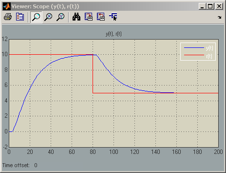Figure 13: Setpoint vs. measured output.
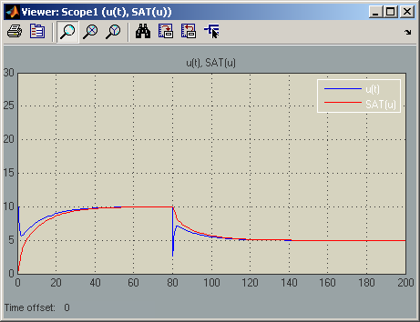Figure 14: Controller output and effective saturated input.
Constructing Anti-Windup Circuitry for PID Control with Feedforward
In another common control configuration, the actuator receives a control signal that is a combination of a PID control signal and a feedforward control signal.
To accurately build a back-calculation anti-windup loop, the tracking signal should subtract the contribution of the feedforward signal. This allows the PID Controller block to know its share of the effective control signal applied to the actuator.
The following model includes a feedforward control.
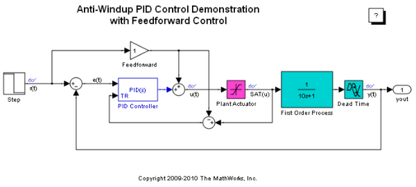Figure 15: Simulink model of PID controller with feedforward, and plant input saturation.
The feedforward gain is selected to be unity here because the plant has a dc-gain of 1.
To open this model, type sldemo_antiwindupfeedforward in a MATLAB terminal.
Figures 16 and 17 show that the plant's measured output y(t) and the controller output u(t) are responding almost immediately to changes in the setpoint. When the setpoint value is 10, note how in Figure 17 the controller output u(t) reduces to be within the range of the actuator.
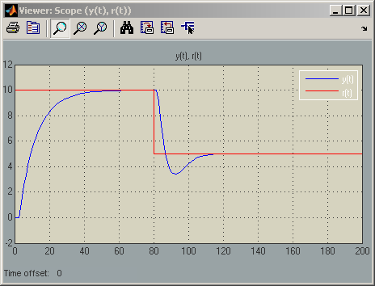Figure 16: Setpoint vs. measured output without anti-windup.
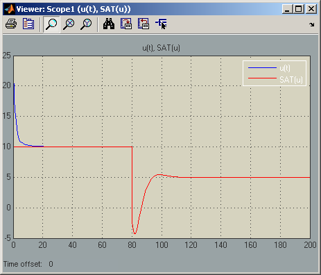Figure 17: Controller output and saturated input with anti-windup.
Summary
The PID Controller block supports several features that allow it to handle controller windup issues under commonly encountered industrial scenarios.
References
[1] K. Åström, T. Hägglund, Advanced PID Control, ISA, Research Triangle Park, NC, August 2005.